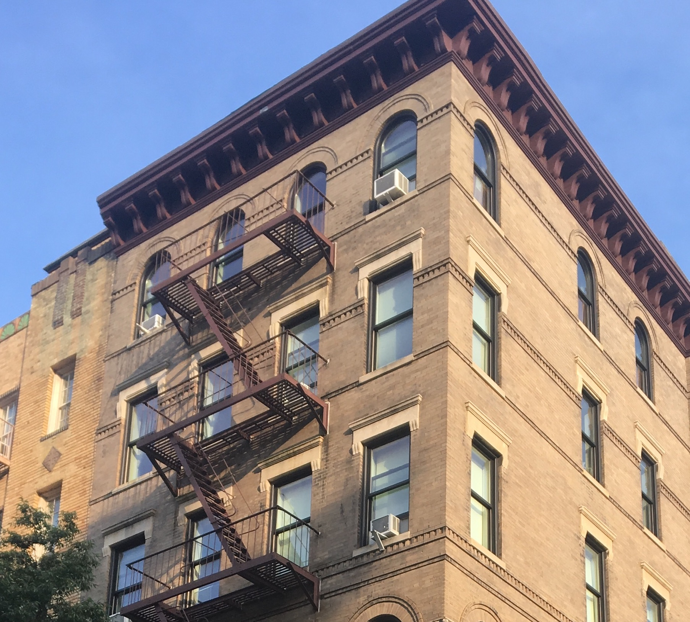
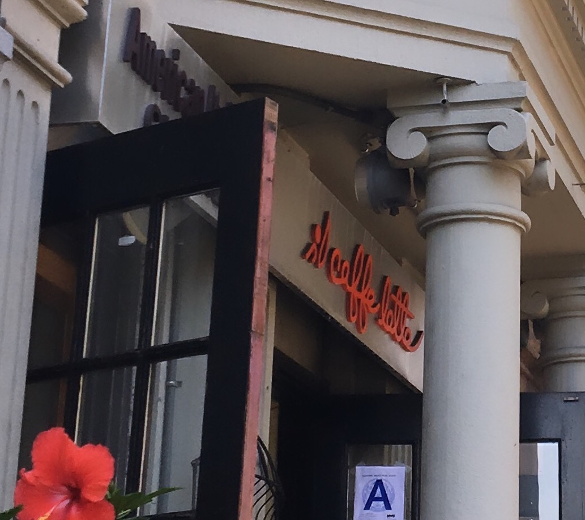

Jess's Summer Activities
There are so many thing that I did this summer! For most of it I went to Columbus, Ohio for my internship for Victoria Secret, but I also had some really fun adventures with my friends from back home.
Some other images of the summer! The first is when I went to NYC with my friend Kaitlyn and we visited the the iconic F.R.I.E.N.D.S apartment, the second is where we stayed with an airbnb, the last is a chic place that a group of friends and I walk across in another city.

